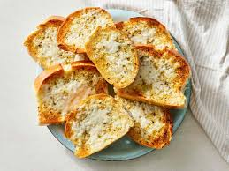

Garlic bread

Garlic bread consists of bread, topped with garlic and occasionally olive oil or butter and may include additional herbs
such as oregano or chives. It is then either grilled until toasted or baked.
Ingredients
- 1 loaf Italian bread
- 5 tablespoons butter, softened
- 3 cloves garlic, crushed
- 2 teaspoons extra virgin olive oil
- 1 teaspoon dried oregano
- salt and pepper to taste
- 1 cup shredded mozzarella cheeese
Steps
- Gather all ingredients.
- Set an oven rack about 6 inches from the heat source and preheat the oven's broiler. Cut loaf into ten 1-inch slices.
- Mix butter, garlic, oil, oregano, salt, and pepper together in a bowl; spread butter mixture on one side of each slice of bread; arrange bread slices, butter-side up, in a single layer on a baking sheet.
- Cook under the preheated broiler until slightly brown, checking frequently so they do not burn, about 3 minutes.
- Top bread slices with cheese and return to broiler until cheese is slightly brown and melted, about 2 minutes.
- Serve hot.